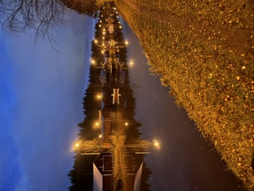
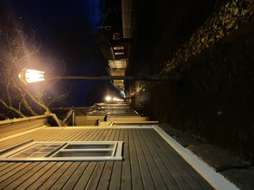

Photo gallery
Three autumn moments from my break, from the cottage road to the lake at dusk and an evening walk through the old town.



A quiet week by the lake when the birches turn gold
Three autumn moments from my break, from the cottage road to the lake at dusk and an evening walk through the old town.

